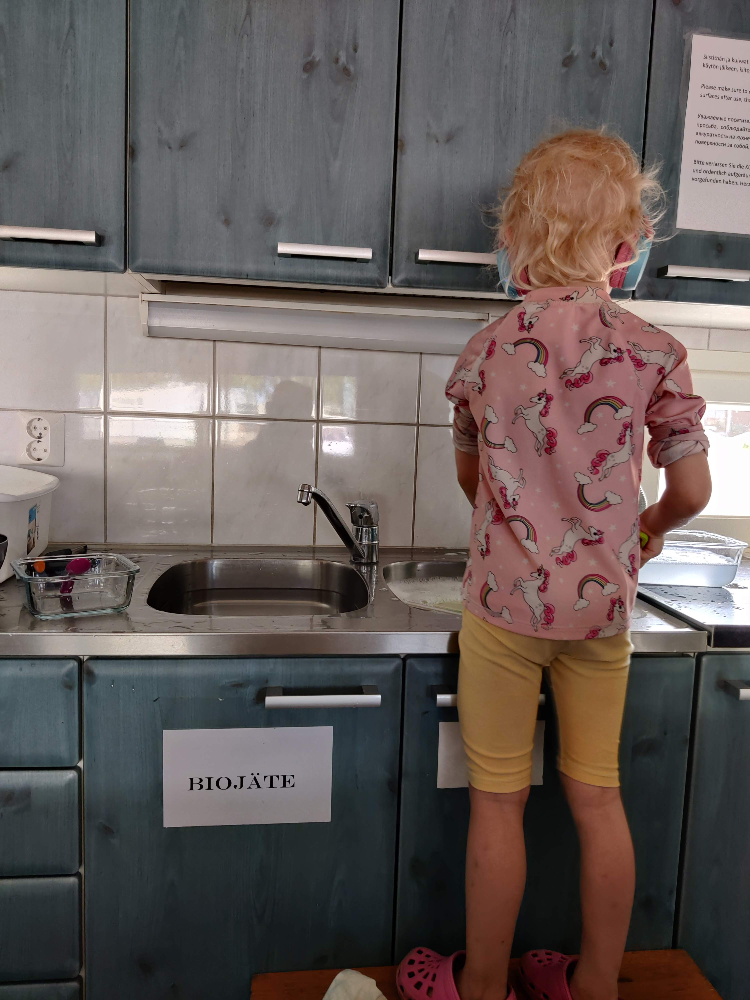
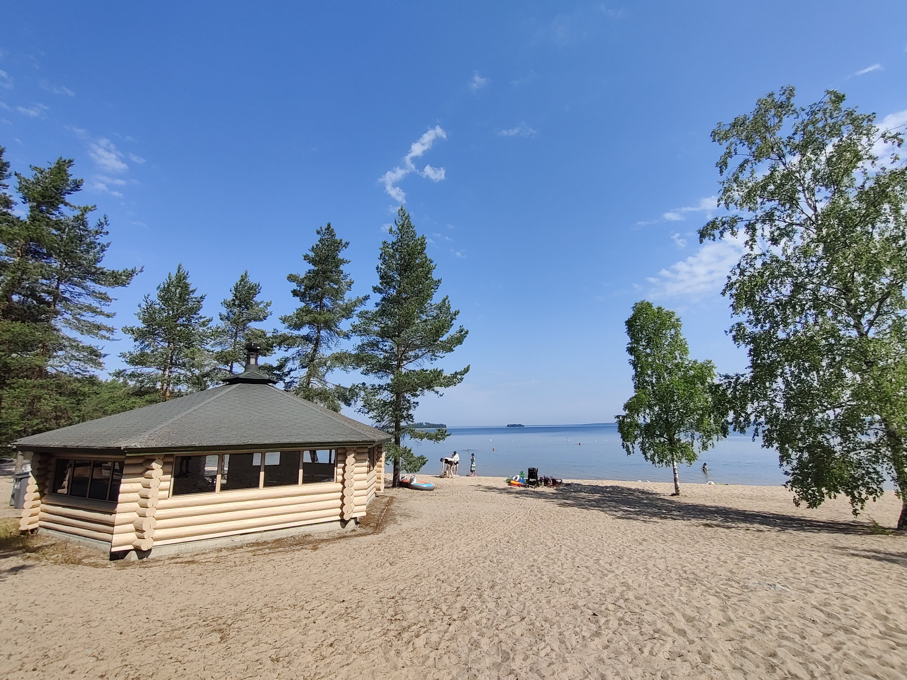

Huoltorakennukset
Ruokkeen Lomakäylässä on uusi hieno huoltorakennus, jossa on WC:t ja perhesuihku sekä vauvan hoitopöytä. Huoltorakennuksessa on ilmastointi ja pieni keittiö mihin mahtuu kolme perhekuntaa syömään tai laittamaan ruokaa ja tiskaamaan. On myös mukavaa, että siellä on tiskirätti ja harja sekä tiskipesuaine. Et siis välttämättä tarvitse omia mukaan. Keittiö on hyvin varusteltu: sieltä löytyy uuni, liesi, mikro ja tarvittavat astiat. Erityistä plussaa on ilmastointi ja perhesuihku.


Alueesta
Leirintäalue sijaitsee Puruveden kirkkaan vesistön läheisyydessä. Alueelta löytyy grillikota, jossa on hyvin tilaa usemmankin perhekunnan grillailla. Kodalta avautuu kaunis rantamaisema. Hiekkarannn toisessa päässä on myös toinen avotulentekopaikka. Vesi on kristallin kirjasta ja ranta on matala eli pienempienkin lasten kanssa siinä on turvallista uida sillä ranta ei ole äkkisyvä. Järvessä on lapsille liukumäki.Vierailun arvoisia kohteita Kesälahdessa vieraillessa
| Kesälahden kotiseutumuseo | Historian havinaa kotiseutumuseolla. Täällä voi myös kävellä lyhyen lenkin lasten kanssa. | Lue lisää Kotiseutumuseon sivuilta |
| Kahvila Matamin Lumo | Pittoreski kesäkahvila ja vertaansa vailla olevat herkut! | Lue artikkeli Koti-Karjalan sivuilta |
| Tohmajärvi | Tee päiväretki Suomen kansallismaisemissa | Lue lisää Visit Tohmajävi-sivuilta |